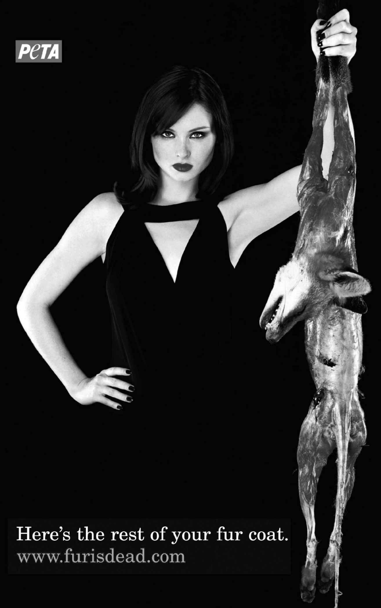
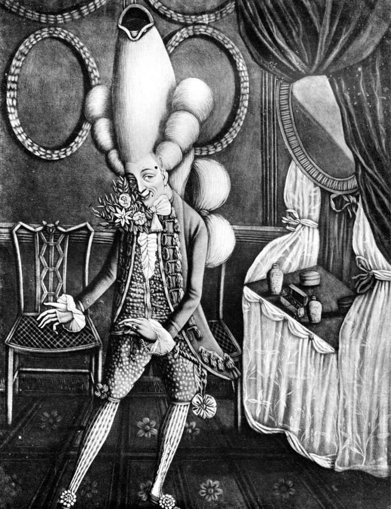
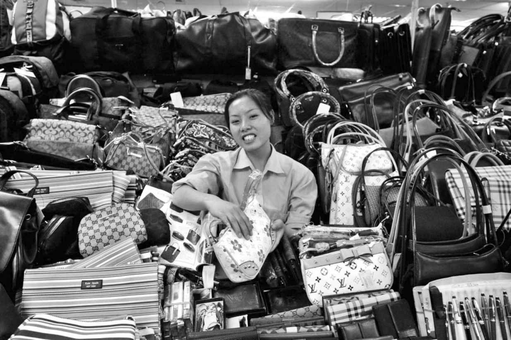

1980年成立于美国的善待动物组织（People for the Ethical Treatment of Animals，PETA）如今已成长为保护动物权益的全球压力集团。它发起的运动涵盖了许多与时装相关的议题，强迫人们正视动物产品的使用，例如皮草和羊毛制品。2007年的一张宣传照展示了英国流行歌手、模特苏菲· 埃利斯· 贝克斯特身着一袭优雅黑色晚礼服的形象。她的面庞妆容精致：鲜红的双唇，白皙的皮肤，化着烟熏浓妆的眼睛。
再看下去，这个“蛇蝎美人”的造型就名副其实了：她单手拎着一只惨死狐狸的尸体，它的皮毛已被剥掉，露出猩红的血肉，头颅怪诞地耷拉在身体一侧。下方的标语写道：“这就是你那件皮草大衣剩余的部分”，进一步强化了支撑皮草生意的残酷这一信息。这张宣传照的整体美学风格基于怀旧的黑色电影影像，而1940年代的电影女主人公们却经常肩头围裹着狐裘披肩，以作为奢华与性感的象征。PETA颠覆了观看者的期待，让人们不得不直面皮草背后的杀戮和恐怖。

图15 PETA使用醒目的图像与富有冲击力的方式揭露皮草交易的残酷
其他的印刷品和广告牌宣传照也运用了名人面孔与熟悉图像的类似组合，以及揭露时装产业阴暗面的这种并置所带来的冲击。这一组织的目标就是要迫使消费者认清时装大片和营销手段那愉悦感官的表象背后究竟发生着什么，并让人们学会审视服装生产的方式和相关过程。PETA的标语运用极富冲击力的直白广告语言组织出令人记忆深刻的口号，并进入人们的日常口语。典型的例子包括揭露皮草交易核心矛盾的那几句讽刺的双关语：“皮草是给动物准备的（”Fur is for Animals），“裸露肌肤，而不是穿着熊皮（”Bare Skin,not Bear Skin），还有提倡将文身作为另一种时尚身份象征的“用墨水别用貂皮（Inknot Mink）”。
PETA对动物皮毛这一主题的关注意味着这些作为皮草来源的鲜活生命间的关联将被持续不断地再现。1990年代中叶，它曾做过一场著名的“宁可裸露，不穿皮草（I'd Rather GoNaked Than Wear Fur）”的宣传运动，请来一众超模和名流，她们褪去华服，立于巧妙安排的标语牌后。这些图片按照时装大片的风格设计制作。虽然身上一丝不挂，画中人仍旧被精心打扮和打光，以突出她们的“自然”美。通过模特、演员和歌手们的“本色”出演，她们自身的文化地位和价值观与PETA的宣传号召力之间形成了一种直接的连接。它传递出这样一种信息：假如这些广受欢迎的专业人士都拒绝皮草，那么普通消费者更应该如此。当然也有一些失足之人，比如娜奥米· 坎贝尔，她在1990年代末脱离PETA，很快就喜欢上了皮草制品还有狩猎，但这些人也没能削弱PETA传递信息的强大影响力。21世纪初，包括演员伊娃· 门德斯在内的一批新人与PETA签约。制作的图像包括名人裸身怀抱兔子的“放过兔子（Hands off the Buns）”宣传图。
PETA提升了时装产业对动物权利的认知。对于那些被该组织认定对时装中皮草的持续使用负有责任的对象，PETA成员闯过秀场，洒过颜料，还扔过轰动一时的冰冻动物尸体，此外也推动制定了针对羊毛贸易中对待山羊的新法规。PETA活动者的工作不仅强调了皮草贸易中不必要的残酷，同时还阐明了皮草如何常被错误地当成一种“天然”产品供人穿着，而事实是绝大多数皮草来自人工养殖，一经从动物身上获取，还需要经历各种化学处理以去除上面粘连的血肉，预制成待用的面料。
尽管PETA的目标令人钦佩，但他们所采取的方式引发了更多的道德问题。这一组织对时装视觉语言以及更广泛的青年文化的借用，致使人们指责它打着动物权利的旗号而持续对女性性化剥削。举一个著名的例子：英国“尊重”组织（Britishbased Respect）1980年代的宣传图“一顶皮帽子，两个坏了的婊子（One Fur Hat,Two Spoilt Bitches [6] ）”，画面展示了一名模特身披一件死去动物制成的披肩，人们认为这一宣传照全然将女性当成了愚蠢、性感的物件。这种对立给宣传想要传递的信息带来了问题。有人认为这也可以被解读为博人眼球的另一种途径，让人直面穿着皮草这一行为的疏忽，通过令人瞠目的方式使人警醒。然而，为了做到这一点，它采用了主导当代多数广告的极富性意味的视觉方式。这一争议突显了这些宣传中自相矛盾的推动力。在大量的注意力关注一个伦理问题的同时，另一个同样重要的道德议题也被人们接受并且充满争议地信奉为现状。
时装产业的地位是模棱两可的。它既是一个利润丰厚的跨国产业，是许多人汲取愉悦的源泉，但同时又引发了一系列的道德争议。从对女性形象的描绘，到服装工人被对待的方式，时装兼具代表其当代文化之精华与糟粕的能力。因此，一方面时装可以塑造与表达另类以及主流身份，另一方面它又是如此专制、冷酷无情。时装所热衷的组合与夸大有时会破坏和混淆，或者甚至强化负面行为和刻板印象。时装对于外表的关注导致它常常背上肤浅与自恋的骂名。
坐落于洛杉矶的T恤生产商AA美国服饰（American Apparel）是另外一个典型的例子。公司宗旨自1997年成立之初便是致力于摆脱生产外包，试图打造“非血汗工厂”生产线。与其他专注基本必备款的品牌不同，这一品牌拒绝在发展中国家生产服饰，因为这些地方很难保证对工人权利与工厂环境的管控。相反，AA美国服饰选择用本地工人，通过这样的方式回馈当地社区。品牌店铺请来本土、国内知名的摄影师进行店内展览，店里那些酷酷的和都市感十足的基本款在各国市场大受欢迎。品牌的广告宣传强化了其道德认证，关注工人群体，常常请自家店铺中的店员及管理职员来做广告模特。
但品牌运用的图片风格却再一次引发了广泛的批评。AA美国服饰的老板多夫· 查尼喜欢一种类似快照式的摄影风格——少男少女的偷拍照，他们常常半裸，对着镜头扭曲着身体。杰米· 沃尔夫在给《纽约时报》撰写的一篇文章中曾写道：
这种美学并不新鲜；它借鉴了1970年代南· 戈尔丁以及拉里· 克拉克的青年文化图像。时装图片也不是头一回运用这种美学：卡尔文· 克莱恩数十年来也组合运用了类似博人眼球的年轻模特大片来宣传自己的简洁设计。这一美学渗透影响了各类时尚杂志和线上社交网站，当然也包括AA美国服饰自己的网站，它在页面上将图片按系列划分展示，方便访问者浏览翻阅。因而在这些模特生活化的姿态以及随意的性感中，他们运用了一组熟悉的视觉符号。
AA美国服饰在视觉形象中运用的享乐、性感美学或许会让人以为这是一家面向年轻群体的公司，但它又与传统观念中关注道德议题的“令人起敬”的公司应该被呈现的方式格格不入。就像抵制皮草的广告那样，当一件产品或某个事业被置于道德层面上，对于潜在暧昧且性感的图片的使用尤其容易遭到公众的批判。如果当代价值观中的某一方面被人们提出，它也会提高人们对某一组织或品牌产出成果各个方面中潜在问题的意识。尽管AA美国服饰使用的图片与品牌所面向的年轻群体的口味相投，可与此同时它却运用了业余的情色美学，这种美学广泛影响了21世纪初期的文化。鉴于时装产业的道德地位如此令人担忧，而它在构建当代文化中扮演的角色亦受到重重质疑，人们能察觉到传播手段和表现方式会破坏道德信息和行为也就不足为奇了。
身份与反叛
与时装生产方式相关的道德议题自19世纪晚期以来引发了大量的关注，而推动早期批评的却是时装改变一个人外貌的种种方式。人们的道德担忧主要集中在时装的伎俩上，它既提升了穿着者的美貌或是身份，又混淆扰乱了社会礼仪以及可接受的穿衣打扮、行为举止的方式。时装与身体的密切关系以及服饰对身体缺陷的修饰功能，同时又为身形增添了感官诱惑力，这加剧了卫道士们的担忧：既担忧着装者的虚荣，又担忧观看者受时装的影响。历史上，相比想要赞美时装的文字，有更多文字认定时装意味着自恋、傲慢和愚蠢。比如14世纪的文字和绘画都认为过分注重外貌是罪大恶极，因为不管对男人还是女人而言，这种行为都标志着他们的头脑只在乎表面和物质而对宗教默祷不屑一顾。着装者们用时装创造出新的身份，或是颠覆应当如何着装的传统观念，这意味着时装挑战了社会和文化边界，并且让观者感到迷惑。这些焦虑始终占据着中心地位，在那里偏离规范极有可能会给时装和它的信奉者带来道德上的愤恨。
虽然人们希望体面的女士男士们在他们的着装中展示对当下潮流的意识，但对细节过多的关注却仍然是个问题。同时，人们也认为时装对老年群体、底层阶级来说不合时宜。尽管如此，这些看法也没能阻止时装的传播。17世纪，本· 琼森在他的喜剧《艾碧辛，或沉默的女人》（Epicoene,or The Silent Woman ）里就作了评说，揭示了使得时装含糊不清的一些关键问题。剧作中，外表平平的女性被认为更加品行端正，而外表美丽的女子则被指责勾引男人。剧中同样谴责了试图追赶时装和美妆潮流的年长女性。剧中人物奥特评价自己的妻子：
这种可以花钱买到美貌的观念，在这部剧里包括能够把脸变成时髦苍白色的水银，深深突显了时装与生俱来的表里不一。奥特夫人的购物之行意味着她的外貌更多地属于流行的零售商而非自然天成。因此，她不仅是在欺骗她的丈夫，还愚蠢地花着大把的钱想重回青春。
这一主题在接下来的各个时期里通过布道词、宣传册、专著以及绘画不断发展。18世纪晚期到19世纪初，讽刺画家，最著名的有克鲁克香克和罗兰森，画过一些装上假发、精心打扮了的年长女人，她们的身子用各种垫料和箍圈重新塑形，打造出身体曲线，使其符合当下的审美理念。1770年代，人们取笑最多的是高耸的假发顶上还插着一英尺长的羽毛；接下来的十年里，嘲笑声则转向裙身背后的臀垫；到了世纪之交，又开始嘲弄本就纤瘦的女子在身着最新潮的筒裙后看上去更加瘦弱，奚落丰腴的女士穿着同样的流行时装则看起来更加臃肿。
这种种批评反映了人们对女性、女性身体以及女性社会地位的态度。女性当然被视为不如男性重要，卫道士们还要监督着她们的衣着、仪态、礼仪还有举止。社会阶级同样扮演了重要角色，人们对精英阶层和非精英阶层的女性有着不同的标准与期望。有一点极为重要，所有女性都应当保持体面的形象，将自己与风尘女子清晰地区别开来，避免让自己的家人蒙羞。因此，女人们必须精心考虑如何使用时装；过多的兴趣容易引人非议，可兴味索然也会导致女性遭人质疑。时装在性别塑造中扮演的角色意味着它对于人们对自己的个人与集体身份的投射是一个关键元素。男人们因为时装选择而受指摘的情况要少得多，但他们依旧必须维持好与自己的阶层和地位相一致的形象。然而，那些过于热衷时装的年轻男子们确实也会遭到强烈的道德谴责。18世纪初，《旁观者》（The Spectator ）杂志把热衷打扮的学生描述为“一无是处”，像女人一样，“只会以‘衣’取人”。这或许是男士时装在色彩、装饰及款式上已然绚丽纷繁的最后一个时代了，因此想要反叛则需要更大的努力。正如《旁观者》所指出的那样，要做到这一点就是要挑战社会预期，甘冒被斥娘娘腔的风险。
这类男性多数都遭遇过性取向甚至是性别的怀疑。1760年代到1770年代，这批“纨绔子弟”（Macaronis [7] ）与他们最直接的前辈“花花公子”（Fops）一般，招来讽刺画家和批评家们的嘲笑。这些以意大利面命名的年轻男子们用色彩艳丽的衣着炫耀着自身与欧洲大陆之间的种种关联。他们的服饰夸张地演绎着当下的时装潮流，以超大号的假发为特色，有时还会扑上一些或红或蓝的粉，而不是常见的白色。他们身穿的外套剪裁极为贴身，形成曲线延伸到身后，且常常被描绘成一副姿势做作的样子。“纨绔子弟”们在许多方面都冒犯了男子气概的典范；他们被认为柔柔弱弱，既不爱国又自负虚荣。各种组织松散的过于时髦的年轻男子群体取而代之，每一个群体的打扮都极力夸耀着自己的与众不同，并反叛着社会观念。其中包括法国大革命时的“公子哥”（Incroyables），还有19世纪英国的“时髦人士”（Swells）和“花花公子”（Mashers）以及美国的“时髦男”（Dudes）。每一个群体都运用夸张的打扮、异域风情的时装以及对发型和配饰的格外用心来突显自我风格，并以此声明他们要挑战传统的男性典范，因而也是挑战现状。

图16 18世纪的“纨绔子弟”们因他们浮夸的衣着风格与忸怩的行为举止备受讥讽
自1841年开始，《笨拙》（Punch ）杂志就喜欢在嘲讽时装中找乐子，另外也刊载一些以时尚的名义穿着衬裙、束腰和裙撑以将身体扭曲成精致形态的女人的图片。伴随这些讥讽评论的还有医生们的严正警告——穿着鲸骨束身衣将会危害女性的身体健康，但这些声音却几乎无法削弱这类服饰的受欢迎程度。性别依然是一个主要的问题。为了女性化的形象，女性必须穿着这些内衣，可她们又因为穿着这些束身衣被人们指责为不理智。这种双重束缚又扩展到那些被视为过分男性化的服装，哪怕它们比起高级时装更为实用。1880年代，当女性走上白领职位，她们身着的所谓定制服装，即基于男式西服改造但加上裙装的套装，被认为将女性转变成了男性。的确，在所有这些例子中，服装确实被看作穿着者性别、性向、阶层以及社会地位的一种标志，任何不明确都可能引起误解与指责。
这一点清晰地体现在长期以来人们认定女性不应穿裤子的观念中，这一观念认为女人穿裤子是对性别角色的扰乱，暗示着女人一心要夺取男人的支配地位。种种担忧一直延续到20世纪。1942年，女演员阿莱缇在巴黎目睹的穿着裤装的女性人数令她大为惊骇。虽然正处战时的艰难日子，她仍旧认为不应为这种行为找任何理由，并且：
这个例子不仅揭示了缺失女性特质可能给人带来的恐慌，同时也强调了类似这样的道德指摘中的社会因素。身处某些特定职业之中的劳动阶级女性，包括采矿业和渔业，自19世纪以来就穿着裤子或马裤。然而，她们实际上都隐形了：字面意义上，绝大多数身处她们日常职业环境之外的人根本看不到她们；隐喻意义上，全然是因为中产阶级和精英阶层根本无视她们。
在对时装如何可能掩盖一个人的本来地位甚至炫耀其地位以作为对权威的挑战的种种道德担忧之中，阶级是一个恒久的主题。到了20世纪，人们素来对藐视中产阶级体面与礼仪理念的服装的质疑，此时又因众多故意挑衅的亚文化群体的崛起而加剧。在1940年代初的法国，“先锋派”（Zazous）群体中男男女女们细节丰富的西服套装、墨镜，以及美式发型与妆容引起了社会的惊慌。大众与媒体对他们穿着的愤怒集合了一系列常见的问题。他国的时装风格在本国人看来是不爱国的，尤其是当时正处在战时的大环境下，即便美国人身为盟军。他们夸张的服饰和妆容打破了基于阶级建立起来的优雅品味的观念，同时张扬着好莱坞彰显自我的浮夸风格。虽然他们的风格一直只限于一个数量很少的年轻人群体，但“先锋派”们对电影明星时装的效仿以及对爵士乐的热爱却是对法国文化的一种视觉和听觉上的对抗，而此时的法国正处于被纳粹占领的威胁之中。
接下来的数十年中，青年文化持续上演着对关于行为表现的社会规范的破坏。在英国，阶级在塑造亚文化的本质上扮演了至关重要的角色。1960年代，“摩登族”模仿中产阶级的体面打扮，穿上了整洁、合身的西服套装，而“光头党”（Skinheads）则基于工装强化了这一风格，显示出强烈的工人阶级身份。在这几个例子中，青年文化都是在群体成员对于新奇事物的探索，以及对某种音乐风格的热衷这两者合力推动下发展的。到了21世纪早期，工薪阶级青年以及无业青年中出现了一个影响更广的群体。Chavs [8] 总是被人们指责毫无品味，原因就是他们对身上醒目的品牌会不自觉地炫耀，对中产阶级所秉持的时尚理念也毫不尊重。媒体报道暴露了根深蒂固的阶级偏见，这个词很快就与政府住宅群的青少年犯罪产生了关联。Chavs身上具有攻击性的运动装与工人阶级负面的刻板印象联系在一起，成为一种可以轻松识别的内城区不法分子的视觉体现。
媒体对青年风格的每一种新形象的指责，展现了破坏现状的反叛行为所能带来的巨大影响。在日本，东京的原宿地区从1980年代开始就一直是街头时尚的焦点，青年人群从这里衍生发展出了许多穿衣搭配的新方式。少女们颠覆了传统观念中的女性形象，创造出令人惊叹的新风格，从种种来源中自由地组合各种元素，其中包括高级时装、过去的亚文化、动漫以及电脑游戏。事实上，她们这种混合的时装风格反映了电脑虚拟角色中天马行空的个人形象设计，后者在远东地区极受欢迎。原宿的街头时尚公然反抗了父母期望中女孩应当展现出的端庄矜持的形象。流行歌手格温· 史蒂芬妮打造了“原宿女孩”四人舞团，在她的音乐录影带、演唱会现场演出，给这些风格又添上一层争议。韩裔美国喜剧明星玛格丽特· 曹曾经批评过史蒂芬妮对这种亚洲时装风格的不恰当使用，认为她对这些“原宿女孩”的利用极其无礼，她强调：“日本校服有点像扮黑人时用的化妆品。”她的意思是这些舞者代表了一种种族身份的刻板印象，不过是用来为白种人的表演增加气氛罢了。史蒂芬妮的时装风格本身受到了日本街头时尚的影响，但她这些伴舞把这种风格做了进一步的演绎。她们的存在确实不仅体现了对服装借鉴国外风格的担忧，更重要的是究竟谁有权滥用这些时装风格，同时还有对将种族形象刻板化的道德担忧。
此种担忧的另一个不同表现是，人们对选择戴着希贾布头巾以作为宗教信仰与种族身份标志的年轻穆斯林女性的那种困惑又常常有些过激的反应。后“9· 11”时代里人们对于伊斯兰教的恐惧，加上公众以及媒体认为这种外在区别属行为失范的观念，使得在某些法国学校女孩们被禁止戴希贾布头巾。这引发了人们的抗议，也更加坚定了部分穆斯林女性对于希贾布头巾重要性的信仰，它不仅是她们宗教信仰的象征，也是对西方理想中的女性特质以及当代时装裸露身体的一种质疑。
这一议题使得在一些极其特定的案例中，针对少数族裔群体衣着和外貌展示或处理方式的道德抗议更加尖锐。模特圈子对非白人女性的忽略是行业内的一个重要问题。尽管媒体一直在抗议，杂志有时也会做一些一次性的特辑，例如意大利版《时尚》2008年7月刊的所有专题大片全部使用黑人模特，但白人女性依旧统治着T台，时装摄影和广告也不例外。作为非裔英国人的一员，行业顶级的模特乔丹· 邓恩曾说过：“伦敦并非一座完全由白人构成的城市，那么T台上为什么一定要都是白人呢？”时装业对多元性的这种固执的无视，恰好是广泛文化范畴内固有的种族主义的表征。真实的模特以及她们在时尚杂志中的形象展现，迫切需要时装产业改变原有的态度，真正意识到继续只关注白人模特是不被接受的。
规则与变革
伴随着对时尚图片中男性，尤其是女性的表现方式的抗议，各种试图控制或管理时装生产与消费的尝试也不断出现。文艺复兴时期，禁奢法令一直被强制实施，通过限制特定群体使用特制面料或装饰类型来保持阶级区分，或者是强行向民众灌输节俭观念。例如，意大利通过立法来管制人们在诸如婚礼等仪式上的着装，同时也限制了不同阶层女性领口所允许裸露肌肤的尺寸。这些法令定期在整个欧洲实行，但效果依然有限，毕竟其监管实在难以实现。正如凯瑟琳· 克韦希· 基勒比在提到表达了对服装过度展示的社会担忧的意大利法律时写道：“这些法律本质上就是在自欺欺人：通过法律禁止奢侈品刚好采用的一种形式只会催生新的形式以避免迫害。”由于时装始终处在变化之中，虽然早期的变化速度稍慢一些，立法速度难以跟上这些变化的节奏，而且如基勒比所言，这些穿衣人同样富有创意，通过改变服装的款式以规避法律，并创造出某种时装风格的全新形式。
禁奢法令在17世纪式微，虽然它们在二战时期有过复苏且成效甚著。早期对外来货物的进口禁令是出于经济与民族主义的原因，但二战的时间跨度与范围意味着许多类似的法令又因海空战争大肆展开之后严格的国际贸易限制而加重。物资短缺导致许多参战国实行定量配给。1941年，英国通过发行全年可兑换服装的服装券来管制服饰的生产及消费。每个人所分得的服装券数量在整个战期及战后期有所变化，但它们却对获取衣饰实行了非常严格的限制。英国、美国以及法国的法规还规定了服装生产中允许使用的面料用量，并大大削减了可以使用的装饰数量。获取时装的这一严苛的转变在英国公共事业计划的推动下得到了缓和，这一计划雇用了包括赫迪· 雅曼在内的许多知名时装设计师，设计出既遵守法律规定又时髦有型的服装。然而，新衣服的匮乏意味着人们很难规避战时的限制法令，公众与媒体对过度铺张也持严厉态度，认为这种行为缺乏爱国精神，与全民抗战的努力背道而驰。
战后，苏联阵营国家得以延续对时装的这类限制，并试图给时装加上反社会主义的罪责，这在各国收效不一。东德的贾德· 施蒂茨写道：
然而，根据职业特点设计制造的服装，包括围裙和工装等，吸引力非常有限，而且正如在其他社会主义国家中一样，包括捷克斯洛伐克，在更具功能性的时装风格之外还发展出一种国家许可的时装与时装意象的不稳定的结合体。这些想要革新时装并实现服装的道德形式的尝试顺从了19世纪服装改革家的倡导，比如古斯塔夫· 耶格尔博士，他提倡无论男女都应当抵制时装的过度铺张，并使用天然纤维的服装，还有欧洲、斯堪的纳维亚半岛以及美国的女权主义者们，她们呼吁服装应具有更大的平等与理性。
这些旨在管制服装并创造出不伤害动物、人和环境的服装的推动力在20世纪晚期和21世纪初的形式开始逐渐进入主流观念，同时也融入商业时装之中。在嬉皮士以及与之相关的1960年代至1970年代寻求更为天然的时装以及关注道德议题的运动刺激之下，21世纪之交设计师与顶尖品牌们努力地调和着消费主义的发展与人们对更周到的时装设计与生产需求之间的矛盾。自20世纪早期开始，人们采取了一系列措施来管理工人的薪资与工作环境。这是由1911年纽约三角大楼制衣厂大火等事件推动的，其中有146个移民工人丧生。没人知道这间工厂中有多少转包工人，他们领着微薄的薪水，在拥挤逼仄的环境中工作，这意味着许多人根本无法从蹿出的大火中逃生。虽然类似的事故引发了针对血汗工厂的广泛抗议以及对最低薪资保障的呼吁，这样的现象直到今天仍旧未能彻底消除。随着大城市租金上涨，大批量生产向更偏远地区转移，最终迁到了南美洲和远东地区更为贫困的国家，那里的劳动力和房屋都更为廉价。所谓的“快时尚”，即品牌竭力供应着的时装秀上刚刚展示的最新时装，引发了激烈的竞争，这些品牌要不断以尽可能的低价在全年投放新的款式。
热门的高街品牌使用雇用童工生产的供应商这一行为一直以来遭到了各种控诉。2008年10月，英国广播公司（BBC）与《观察家报》（The Observer ）做了一篇报道，指称廉价品牌普利马克（Primark）的三家供应商使用印度难民营中的斯里兰卡幼童，在极端恶劣的工作条件下为T恤衫缝制装饰物。意识到自己的处境后，普利马克立即解除了与这批供应商的合约，但报道揭示了当代时装产业中的一个核心问题。廉价服饰的便宜易得让人们对时装的获取更加民主化，可是又变相鼓励着消费者把服装当作短期消耗品随意抛弃，再加上生产廉价产品的激烈竞争，自然使得剥削成为潜在的后果。面向大众的时装连锁品牌都宣称，是巨大的销量使得它们的服装价格变得亲民。但是，这一模式中却存在着道德以及人力的成本，因为供应链正变得越来越分散，越来越难以追踪。记者丹· 麦克杜格尔是这样说的：
普利马克并非面临非议的唯一连锁品牌；其他品牌，包括美国的盖璞，它们的供应商同样出现了许多问题。像英国“人树”（People Tree）这样的品牌因此力图避开上述商业模式，它们与自己的供应商建立起密切的联系，努力地创造可持续的生产模式，在那些生产其产品的国家里为当地社区造福。更大的品牌，比如AA美国服饰，也采取行动，通过使用本地工人来防止出现血汗工厂现象。这两个品牌还努力使用对环境影响较小的面料。牛仔与棉花生产中漂白与染色工艺的毒害，促使有机和非漂白产品在市场各个层面上涌现。与前几十年生产的早期产品不同的是，如今的生产商意识到，即便对于合乎道德的产品而言，消费者也会期待它们有时尚的设计价值。小众品牌像是鲁比伦敦（Ruby London）在其产品中加入时髦的有机棉紧身牛仔系列，瑞典品牌Ekovarnhuset除了自有产品线还出售其他生态时装品牌，创造出既时髦又环保的服装。甚至海恩斯莫里斯、纽洛克、玛莎（Marks and Spencer）这样的大品牌都引入了有机棉产品线。高级时装也开始涵盖越来越多的合乎道德的品牌。斯特拉· 麦卡特尼拒绝使用动物皮草或皮革，丹麦品牌Noir的设计师们则把前卫的时装风格与严格的道德经营方针结合起来，方针包括支持生态友好面料的发展。
此外也有一些设计师提倡“减少购买”但投资使用周期更长且较为昂贵的单品的理念。这种“慢时尚”理念下的产品系列就有马丁· 马吉拉纯手工制作的“手工”系列服装。《纽约时报》的记者阿曼德· 利姆南德尔分解了这些奢侈品的相对成本后计算得出：以一件拉夫· 西蒙为极简风格品牌吉尔· 桑德（Jil Sander）设计的定制男士西装为例，它的定价为6000美元，需要花费22小时制作完成，也就是说平均每小时单价为272.73美元。尽管这一算法并不能预算出每一次穿着的成本，它却倡导人们转变态度，拒绝快速变换的流行风格与按季购置最新时装的行为。然而并非所有人都负担得起这些必需的初始投资。不过，慢时尚指出了人们试图让时装更符合道德准则所做的努力中的一个核心问题：消费本身就是问题症结所在。时装给环境造成的影响覆盖了一系列问题，从棉花等天然纤维种植过程中的生产方法与行为，到大众消费主义以及公众对新款时装的渴求。
日本连锁品牌无印良品（Muji）的再生纱线针织服装系列提供了一种解决方案；巴黎的马里籍设计师克叙里· 比约特在设计中使用回收的旧毛衣则是另一种思路。这些服饰都依赖二手织物与服装，可以视为对20世纪末转向古着与跳蚤市场购置时装行为的一种配合。这些时装对环境的影响更小，并减少了生产过程，但它们不太可能完全取代现有的时装产业，尤其是考虑到它巨大的国际化范围还有与其生产与营销息息相关的巨额资金。

图17 远东地区的许多市场出售奢侈品牌It手袋最新款仿制品，价位仅为真品市售价格的零头
道德购物本身也存在着异化为一股时尚潮流的风险。随着全球经济在21世纪头十年里衰退，许多报道不断质疑着“衰退时尚”（recession chic）与“感觉良好消费主义”（feelgood consumerism）这类理念，它们建立在人们购买有机或符合道德准则生产的服装时内心的美德体验，即便他们的购买实际上并非必需。问题停留在消费者是否自愿拥有更少物质，并减少把购物当作某种获取休闲与愉悦的渠道的行为，以及道德化的品牌是否能坚持对应该购买何种产品的评判并维持自己的发展。
遍布全球的仿制品市场兜售着最新款的It手袋复制品，表明了身份象征具有永恒的吸引力，以及时尚能够诱发人们对具有奢华与精英风格物质的渴求。随着时装覆盖了所有社会层次，并吸纳了国际知名品牌，监管其生产或管制其消费都变得越来越困难。想要实现这一目标，只有靠大规模重组社会与文化价值观，并变革全球化产业模式。这一产业在数世纪以来不断成长，引诱消费者并满足他们对服装触感与视觉魅力的欲望。